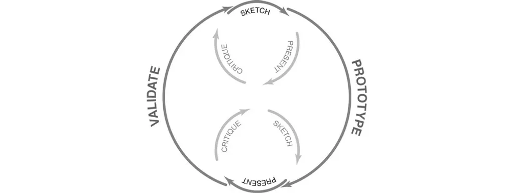
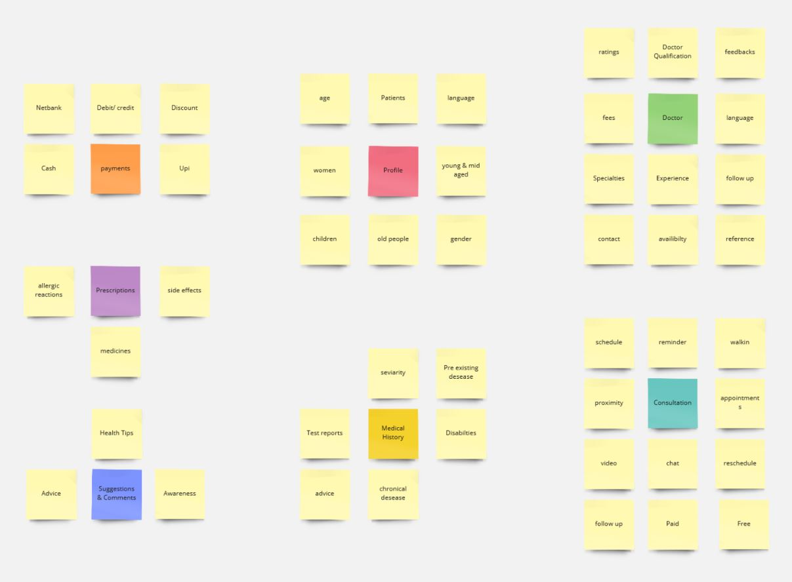
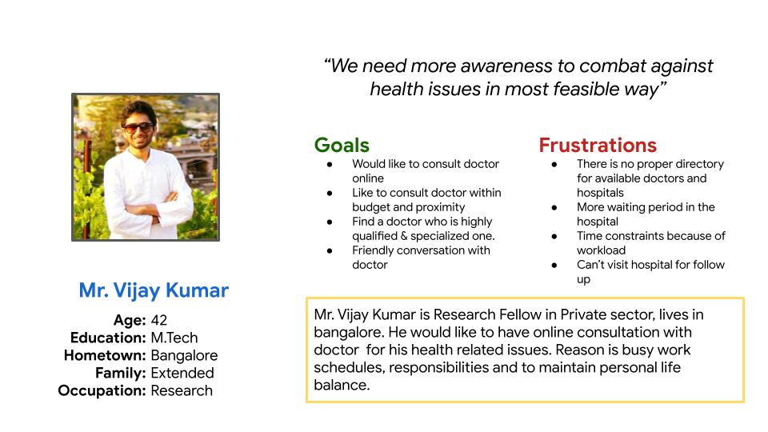

Introduction
Stetho is an app for finding the best available doctor within your local area through online and offline.
Problem
Finding the right doctor within a reach is biggest challenge and most of the people do not know how to go about this issue. Also due to many circumstances and factos people are not able to go to hospital and do not get timely and effective assistance.
How might we help people to get diagnosed from the comfort of their home?
Goal
Improve the lives of people through app that promotes quick and easy access to doctor for health checkup needs.
Roles & Responsibilities
- My Role : UI/UX Designer
- Timeline : 6 Weeks
- Scope : UX / UI
- Responsibilities : Research, Wireframing, Prototyping
- Software : Figma, Photoshop, Figma-Mirror
- Constraints : Team & Budget
Process
I used the LEAN UX Process.
The first step was to empathize with the users to better understand the problem space. I have started by gathering the requirements by doing the secondary research to design an MVP.

Some of the insights from the secondary research conducted were as follows:
I am able to identify group of people based on age, gender, ethnicity.
- Young & Mid Aged People : Many are busy (eg, at college or work), not well engaged with hospital care
- Old People : They may find it difficult to go out because of more than one underlying health issue and support
The key factors looked by users while consulting the doctors
- Experience
- Visit a doctor referred by friend and family
- Cost, Specialisation, Ratings
- Follow up and post evaluation process
- Would like to be slef diagnosed for very minor health issues
Competitive Research
Apps like Practo and Lybrate
Define
The next step was to define the problem.
Affinity Mapping
I started by grouping the insights gathered from user interviews on the basis of similarities. I was able to categorize them as follows:

Persona
I Identified the persona that represents the user who would be using the solution

Problem Statement
- From the research synthesis, I was able to come up with specific problem statement that need to be solved
- 1. How might we enable individuals to find the right doctor for them?
- 2. How might we have a one-stop-app for all health-related concerns?
Possible Solution
- Allow the user to find the right doctor through a list of spcialities to choose from
- Allow users to take virtual consultation and offline consultation based on their choice
Information Architecture
This is the important task of establishing the blue print of the product. Created Sitemap and User flow to proceed with the design phase
Skecthing
I have started rough skectching based on the available data and have sketched major screens. The other screens can be added in the later stage of the process and can be seen in the final prototype.

Low fidelity wireframes
After having rough sketch in my hand I decide to go and create the Low-fidelity wireframes for the same as it does not involve too much of detailing like visual aesthetics, color, images and typography and is just a skeleton of the app and will be helpful to validate the design

Design System
The next important step was to focus on the visual design elements and create a brand identity for the product
High fidelity wireframes
Incorporating the visual elements in the high fidelity wireframe to make design ready to prototype and test
Interactive Prototype
Testing
I conducted 2 rounds of moderated usability tests with users and friends. This was to identify any usability or navigational issues that may arise and to get feedback on the visual aesthetic of the product
Issue 1: The profile section is not easily accessible to the user — they did not know where to update the details related to medical history and look for the details of the prescriptions and past consultations
Solution: To solve this issue, i have placed the profile section on the home page with persons consultation & prescription tab right below the profile image, so that it can be easily accessible to the user. Same with appointment details and the reminders section , i managed to use this on the bottom navigation section for proximity and accessibility.
Issue 2: User did not had option to choose right doctor/ therapist based on the experience, ratings and price.
Solution: I sorted out this issue by adding filter option in the doctors list page for the user to make thier decision.
Conclusion
As this is solo project for me, this case study has been a great learning experience right from identifying the problem to executing the solution. The various stages of the design thinking process served as a roadmap for coming up with a solution.